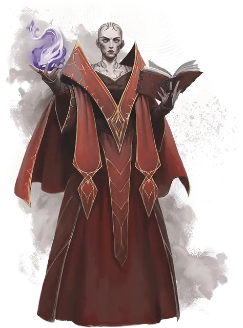

Кселнена Трул
Xelnene Thrul
Средний Гуманоид (Волшебник), Нейтральный Добрый, именной НИП

Класс Защиты 17 Инициатива +10 (20)
Хиты 208 (32к8 + 64)
Скорость 30 футов
| мод | спас | ||
|---|---|---|---|
| СИЛ | 10 | +0 | +0 |
| ЛОВ | 18 | +4 | +4 |
| ТЕЛ | 15 | +2 | +8 |
| мод | спас | ||
|---|---|---|---|
| ИНТ | 21 | +5 | +11 |
| МДР | 16 | +3 | +9 |
| ХАР | 19 | +4 | +4 |
Чувства пассивное Восприятие 19
Языки Общий, Драконий, Инфернальный, Небесный
Опасность 17 (18 000 опыта; БВ +6)
Особенности
Построение заклинаний. Когда Трул сотворяет заклинание с областью воздействия, она может заставить энергию заклинания обогнуть себя и вплоть до пяти других видимых им существ. Выбранные существа автоматически преуспевают в спасбросках от этого заклинания, и если обычно при успешном спасброске они должны получить половину урона, в этом случае они не получают урона вовсе.
Сопротивление магии. Трул совершает с Преимуществом спасброски от заклинаний и прочих магических эффектов.
Действия
Мультиатака. Трул совершает четыре атаки Волшебным всплеском. Она может заменить одну атаку использованием Сотворения заклинаний (Молния, версия 5-го уровня или Огненный шар, версия 5-го уровня).
Волшебный всплеск. Бросок рукопашной или дальнобойной атаки: +10, досягаемость 5 фт. или дистанция 150 фт. Попадание: 32 (5к10 + 5) Силового урона.
Сотворение заклинаний. Трул сотворяет одно из следующих заклинаний (заклинательная характеристика — Интеллект, Сл спасброска заклинаний 19):
Неограниченно: Волшебная рука, Доспехи мага, КЗ, Иллюзорные письмена, Молния, версия 5-го уровня, Обнаружение магии, Огненный шар, версия 5-го уровня, Смена обличья, Фокусы
2/день каждое: Демиплан, Изменение памяти, Наблюдение, Послание, Телепортация
1/день каждое: Солнечный ожог, Цепная молния
Реакции
Защитная магия (3/день). Архимаг сотворяет Контрзаклинание или Щит в ответ на условие этого заклинания (заклинательная характеристика — та же, что для Сотворения заклинаний).
Бонус мастерства +6